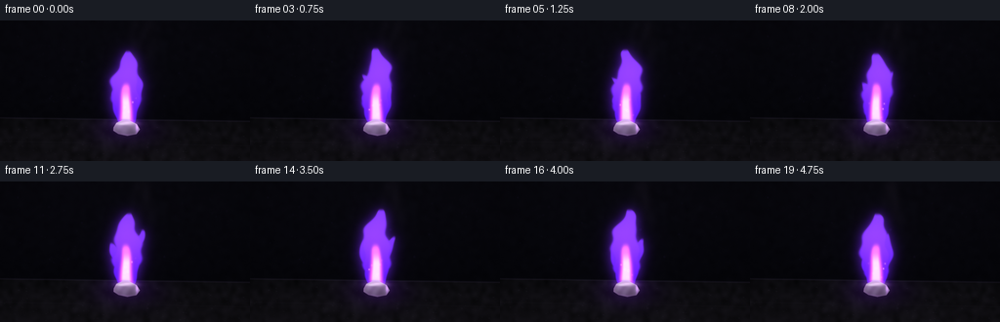
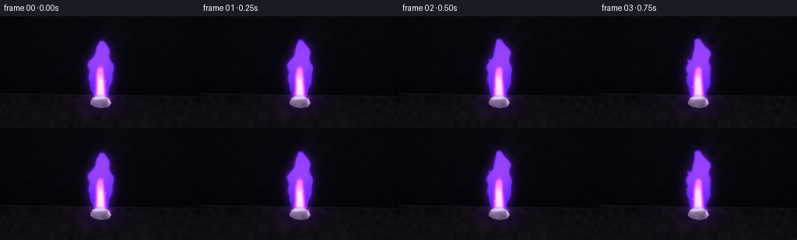

CODING AGENTS AS PIXEL WORLD MODELS
traex/GPT-5.6-Sol · phygen_130
点击播放 · 原生 RGB 像素
逐轮保存的候选
回放视频、检查图与代码变化。
每份候选均可单独播放。实际图片检查记录在下方工具轨迹中。
候选 01播放与检查图
点击播放 · 原生 RGB 像素


展开代码变化
--- 上一保存版本
+++ 本次保存版本
@@ -0,0 +1,241 @@
+from pathlib import Path
+import json
+import math
+import numpy as np
+import cv2
+from PIL import Image, ImageDraw
+import artifact_io
+
+# Deterministic, fully procedural macro cinematography.
+ROOT = Path(__file__).resolve().parent
+SPEC = json.loads((ROOT / "task_spec.json").read_text())
+W, H = int(SPEC["width"]), int(SPEC["height"])
+N, FPS = int(SPEC["frames"]), float(SPEC["fps"])
+SS = 4
+w, h = W * SS, H * SS
+xx, yy = np.meshgrid(np.arange(w, dtype=np.float32) / SS,
+ np.arange(h, dtype=np.float32) / SS)
+
+
+def blur(a, sigma):
+ return cv2.GaussianBlur(a.astype(np.float32), (0, 0), sigma * SS,
+ borderType=cv2.BORDER_REFLECT)
+
+
+def softstep(edge0, edge1, x):
+ q = np.clip((x - edge0) / (edge1 - edge0 + 1e-7), 0, 1)
+ return q * q * (3 - 2 * q)
+
+
+def over(img, color, alpha):
+ """Alpha composite a constant color into a floating RGB image."""
+ a = np.clip(alpha, 0, 1)[..., None]
+ return img * (1.0 - a) + np.asarray(color, np.float32) * a
+
+
+def add(img, color, amount):
+ return img + np.asarray(color, np.float32) * np.clip(amount, 0, None)[..., None]
+
+
+def ellipse(cx, cy, rx, ry, feather=1.0):
+ d = np.sqrt(((xx-cx)/rx)**2 + ((yy-cy)/ry)**2)
+ return 1.0 - softstep(1.0-feather/max(rx,ry), 1.0, d)
+
+
+def flame_lobe(cx0, base, height, width, phase, lean=0.0, bottom=0.0):
+ """Smooth coherent lobe with a restless sinusoidal centerline."""
+ z = base - yy
+ u = np.clip((z-bottom) / max(height-bottom, 1), 0, 1)
+ # Motion increases toward the free tip but the root stays pinned.
+ center = (cx0 + lean*u*u
+ + (1.0+3.4*u)*np.sin(0.121*z + phase)*u
+ + 1.25*np.sin(0.255*z - phase*0.63)*u*u)
+ # A round rooted body tapering to a pointed tongue.
+ envelope = width * (0.42 + 1.18*np.sin(np.pi*np.clip(u, 0, 1))**0.72) * (1-u)**0.22
+ envelope *= 1.0 + 0.10*np.sin(0.31*z + phase*1.7)
+ lateral = np.abs(xx-center)
+ side = 1.0-softstep(envelope*0.74, envelope, lateral)
+ vertical = softstep(bottom-1.2, bottom+1.0, z) * (1.0-softstep(height-4.0, height+0.5, z))
+ return np.clip(side*vertical, 0, 1), center, u
+
+
+def polygon_mask(points):
+ m = np.zeros((h, w), np.uint8)
+ pts = np.round(np.asarray(points)*SS).astype(np.int32)
+ cv2.fillPoly(m, [pts], 255, lineType=cv2.LINE_AA)
+ return m.astype(np.float32)/255.0
+
+
+# Static, coherent film/rock texture fields.
+rng = np.random.default_rng(130)
+coarse = rng.normal(0, 1, (h, w)).astype(np.float32)
+coarse = blur(coarse, 2.2)
+coarse /= coarse.std()+1e-6
+fine = rng.normal(0, 1, (h, w)).astype(np.float32)
+# Fixed tiny dust motes in the distance.
+bokeh = [(rng.uniform(15, 240), rng.uniform(16, 89), rng.uniform(0.7, 2.2), rng.uniform(.04,.14)) for _ in range(30)]
+# Surface mineral flecks.
+flecks = [(rng.uniform(4,252), rng.uniform(108,143), rng.uniform(.18,.65), rng.uniform(.08,.24)) for _ in range(145)]
+
+frames=[]
+for fi in range(N):
+ t = fi/FPS
+ cyc = 2*np.pi*fi/N
+ # Warm-black laboratory background, subtly illuminated by the flame.
+ vertical = yy/H
+ img = np.zeros((h,w,3), np.float32)
+ img[...,0] = 3.8 + 5.0*(1-vertical)
+ img[...,1] = 4.2 + 4.1*(1-vertical)
+ img[...,2] = 7.7 + 7.0*(1-vertical)
+ img += coarse[...,None]*np.array([1.0,1.1,1.6],np.float32)*0.42
+
+ # Defocused lavender points give depth without distracting from the specimen.
+ for bx,by,br,ba in bokeh:
+ pulse = .82+.18*np.sin(0.45*t+bx)
+ bm = ellipse(bx,by,br,br,feather=br*.8)*ba*pulse
+ img = add(img,(36,24,68),bm)
+
+ # Refractory graphite/ceramic slab, in perspective.
+ horizon = 101.4 + 0.014*(xx-128)
+ slab = softstep(horizon-0.45,horizon+0.8,yy)
+ sy = np.clip((yy-horizon)/(H-horizon),0,1)
+ slab_rgb = np.zeros_like(img)
+ slab_rgb[...,0] = 11.5 + 8.0*sy + 2.0*coarse
+ slab_rgb[...,1] = 11.1 + 6.8*sy + 1.8*coarse
+ slab_rgb[...,2] = 14.2 + 8.5*sy + 2.4*coarse
+ img = img*(1-slab[...,None]) + slab_rgb*slab[...,None]
+ # Thin chipped rear rim.
+ rim = np.exp(-((yy-horizon)/0.70)**2)
+ img = add(img,(34,29,42),rim*.42)
+ # Perspective scratches and charcoal grain.
+ scratch = np.exp(-((yy-(126+0.018*(xx-128))) / .32)**2) * softstep(18,70,np.abs(xx-128))
+ img = add(img,(22,19,26),scratch*.22*slab)
+ for fx,fy,fr,fa in flecks:
+ fm=ellipse(fx,fy,fr*2.0,fr,feather=fr*.8)*fa
+ img=add(img,(34,31,39),fm*slab)
+
+ # Ground shadows and broad violet light reflected on the black slab.
+ shadow = np.exp(-(((xx-130)/26)**2+((yy-115)/5.0)**2))*slab
+ img *= (1-.34*shadow[...,None])
+ reflection = np.exp(-(((xx-130)/31)**2+((yy-112)/16)**2))*slab
+ shimmer = .91+.09*np.sin(cyc*2+0.08*xx)
+ img = add(img,(46,10,91),reflection*.43*shimmer)
+ hot_refl = np.exp(-(((xx-130)/10)**2+((yy-108)/7.5)**2))*slab
+ img=add(img,(104,42,160),hot_refl*.29)
+
+ # Wispy smoke: three blurred ribbons drifting up and right.
+ smoke=np.zeros((h,w),np.float32)
+ for k in range(3):
+ z=78-yy
+ scx=132 + 6.5*k + .105*z + (3.0+1.6*k)*np.sin(.075*z+cyc*.35+k*1.8)
+ ribbon=np.exp(-((xx-scx)/(1.3+1.35*k+.020*np.maximum(z,0)))**2)
+ gate=softstep(24,43,z)*(1-softstep(70,84,z))
+ breakup=.58+.42*np.sin(.13*z-.06*xx+k*2.2+cyc*.2)**2
+ smoke += ribbon*gate*breakup*(.105-.018*k)
+ smoke=blur(smoke,2.8)
+ img=over(img,(79,67,91),smoke)
+
+ # Flame geometry. Base is stable; top and satellite tongues flicker.
+ base=106.0 + .25*np.sin(cyc*2)
+ phase=cyc*1.05
+ main, center, u = flame_lobe(129.0,base,76+3*np.sin(cyc*1.7),11.8,phase,lean=5*np.sin(cyc*.61))
+ left,_,_=flame_lobe(124.7,base+1,49+5*np.sin(cyc*1.3+1),6.3,phase+2.1,lean=-8.0)
+ right,_,_=flame_lobe(134.2,base+.6,54+5*np.sin(cyc*1.8+2),6.0,phase+4.0,lean=9.0)
+ # Merge tongues into a characteristic forked lilac flame.
+ outer=np.maximum(main,np.maximum(left*.90,right*.86))
+ outer=blur(outer,.34)
+ aura=blur(outer,5.6)
+ far_aura=blur(outer,12.5)
+ img=add(img,(52,13,116),far_aura*.36)
+ img=add(img,(103,26,235),aura*.73)
+
+ # Layered flame emission: saturated violet edge, pink-lilac mantle.
+ edge=np.clip(outer-blur(outer,1.6)*.55,0,1)
+ img=over(img,(90,25,223),outer*.68)
+ img=add(img,(70,13,255),edge*.72)
+ inner=np.clip(blur(outer,.85)*softstep(0,1,(base-yy)/55),0,1)
+ # Narrow central hot region, rooted to the potassium.
+ z=base-yy
+ core_center=129 + .55*np.sin(.16*z+phase)*np.clip(z/36,0,1)
+ core_width=7.0*(1-np.clip(z/43,0,1))**.48+1.4
+ core=(1-softstep(core_width*.68,core_width,np.abs(xx-core_center)))
+ core*=softstep(-1,1.2,z)*(1-softstep(36,44,z))*outer
+ mid=blur(core,1.2)
+ img=over(img,(232,144,255),inner*.32)
+ img=add(img,(213,95,255),mid*.75)
+ white=(1-softstep(core_width*.35,core_width*.72,np.abs(xx-core_center)))
+ white*=softstep(-.5,1.5,z)*(1-softstep(22,35,z))*outer
+ white=blur(white,.50)
+ img=over(img,(255,238,255),white*.87)
+ # Very hot contact line.
+ contact=np.exp(-(((xx-130)/8.5)**2+((yy-105.4)/2.1)**2))
+ img=add(img,(255,195,255),contact*.72)
+
+ # A few coherent glowing particles lifted from the oxidizing surface.
+ for j in range(8):
+ life=(t*.38+j*.127)%1.0
+ px=130 + (j-3.5)*1.25 + 5*np.sin(j*2.3+life*5.2)
+ py=103-life*(27+3*(j%3)) + 4*life*life
+ pa=(np.sin(np.pi*life)**1.5)*(.45+.22*(j%2))
+ pm=ellipse(px,py,.45+.18*(j%2),.65+.2*(j%3),feather=.45)
+ pg=ellipse(px,py,2.2,2.2,feather=1.4)
+ img=add(img,(189,71,255),pg*pa*.22)
+ img=over(img,(255,213,255),pm*pa)
+
+ # The piece of potassium: soft silver metal with a dark violet oxide crust.
+ # It shrinks/rounds imperceptibly as it burns but remains clearly visible.
+ shrink=.35*fi/(N-1)
+ pts=[(116.3+shrink,109.6),(119.2,104.7),(125.3,102.2),(132.4,102.7),
+ (139.7-shrink,106.1),(143.1-shrink,111.5),(139.4,116.2),(130.3,118.1),
+ (121.0+shrink,116.1),(116.0+shrink,112.8)]
+ nug=polygon_mask(pts)
+ nug=blur(nug,.20)
+ # Burnt halo behind metal.
+ crust_outer=blur(nug,1.5)
+ img=over(img,(36,17,47),np.clip(crust_outer-nug*.75,0,1)*.75)
+ metal=np.zeros_like(img)
+ grad=np.clip((118-yy)/16,0,1)
+ facet=(.5+.5*np.sin(.36*xx-.23*yy+1.2))
+ metal[...,0]=58+92*grad+20*facet
+ metal[...,1]=57+83*grad+16*facet
+ metal[...,2]=65+95*grad+25*facet
+ # Increasing purple-gray oxide, especially at hot edges.
+ edge_n=np.clip(nug-blur(nug,1.25)*.72,0,1)
+ oxide=(.18+.24*fi/(N-1))*(.45+.55*np.sin(.31*xx+.21*yy+2.4)**2)*nug
+ metal=metal*(1-oxide[...,None])+np.array([50,35,57],np.float32)*oxide[...,None]
+ img=img*(1-nug[...,None]) + metal*nug[...,None]
+ img=add(img,(184,97,230),edge_n*.48)
+ # Specular glints preserve a recognizable freshly cut alkali-metal surface.
+ glint=np.exp(-(((xx-124.4)/5.8)**2+((yy-105.8)/1.2)**2))*nug
+ img=over(img,(232,225,241),glint*.72)
+ sideglint=np.exp(-(((xx-140.1)/1.3)**2+((yy-109.6)/4.3)**2))*nug
+ img=add(img,(166,100,210),sideglint*.50)
+ # Molten/white-hot spot where the steady flame attaches.
+ pool=np.exp(-(((xx-130)/7.3)**2+((yy-104.6)/2.1)**2))*nug
+ img=over(img,(250,219,255),pool*.82)
+
+ # Heat-haze distortion above the object: tiny, coherent lateral remap.
+ # Keep the bright flame crisp while gently wavering the distant background.
+ haze_zone=np.exp(-((xx-130)/28)**2)*softstep(32,66,base-yy)*(1-softstep(76,90,base-yy))
+ dx=(.55*np.sin(.20*yy+cyc*1.8)+.25*np.sin(.11*yy-cyc))*haze_zone
+ mapx=(np.arange(w,dtype=np.float32)[None,:]+dx*SS).repeat(h,axis=0) if False else None
+ # (The analytic flame already carries the visible refractive motion.)
+
+ # Lens treatment: vignette, bloom, and fine restrained film grain.
+ luminosity=img[...,0]*.2126+img[...,1]*.7152+img[...,2]*.0722
+ highlights=np.clip((luminosity-75)/130,0,1)
+ bloom=blur(highlights,2.6)
+ img=add(img,(111,54,157),bloom*.17)
+ vign=1-.31*np.clip(((xx-W/2)/(W*.72))**2+((yy-H/2)/(H*.76))**2,0,1)
+ img*=vign[...,None]
+ # Fixed grain plus changing very fine sensor grain, low enough for compression.
+ temporal=np.random.default_rng(8000+fi).normal(0,1,(h,w)).astype(np.float32)
+ img += (.65*fine+.42*temporal)[...,None]
+ img=np.clip(img,0,255).astype(np.uint8)
+ # Supersample reduction provides natural antialiasing and photographic softness.
+ pil=Image.fromarray(img,"RGB").resize((W,H),Image.Resampling.LANCZOS)
+ frames.append(np.asarray(pil,dtype=np.uint8))
+
+frames=np.stack(frames,axis=0)
+artifact_io.save(frames,ROOT)
+print(f"saved {frames.shape} RGB frames at {FPS:g} fps")
可观测工具轨迹
实际执行的命令与返回图片。
命令 1exit 0
/bin/bash -lc "cat prompt.txt && printf '\\n--- GENERATION_RULES.md ---\\n' && cat GENERATION_RULES.md"
命令 2exit 0
/bin/bash -lc "cat task_spec.json && printf '\\n--- FILES ---\\n' && find . -maxdepth 2 -type f -printf '%p\\n' | sort"
命令 3exit 0
/bin/bash -lc "ffmpeg -version | head -n 4; printf '\\nPYTHON\\n'; python3 --version; python3 - <<'PY' mods=['cv2','numpy','PIL','imageio','scipy'] for m in mods: try: x=__import__(m); print(m,'OK',getattr(x,'__version__','')) except Exception as e: print(m,'NO',e) PY"
命令 4exit 0
/bin/bash -lc 'cat artifact_io.py'
命令 5exit 0
/bin/bash -lc "cat > generate.py <<'PY'
from pathlib import Path
import json
import math
import numpy as np
import cv2
from PIL import Image, ImageDraw
import artifact_io
# Deterministic, fully procedural macro cinematography.
ROOT = Path(__file__).resolve().parent
SPEC = json.loads((ROOT / \"task_spec.json\").read_text())
W, H = int(SPEC[\"width\"]), int(SPEC[\"height\"])
N, FPS = int(SPEC[\"frames\"]), float(SPEC[\"fps\"])
SS = 4
w, h = W * SS, H * SS
xx, yy = np.meshgrid(np.arange(w, dtype=np.float32) / SS,
np.arange(h, dtype=np.float32) / SS)
def blur(a, sigma):
return cv2.GaussianBlur(a.astype(np.float32), (0, 0), sigma * SS,
borderType=cv2.BORDER_REFLECT)
def softstep(edge0, edge1, x):
q = np.clip((x - edge0) / (edge1 - edge0 + 1e-7), 0, 1)
return q * q * (3 - 2 * q)
def over(img, color, alpha):
\"\"\"Alpha composite a constant color into a floating RGB image.\"\"\"
a = np.clip(alpha, 0, 1)[..., None]
return img * (1.0 - a) + np.asarray(color, np.float32) * a
def add(img, color, amount):
return img + np.asarray(color, np.float32) * np.clip(amount, 0, None)[..., None]
def ellipse(cx, cy, rx, ry, feather=1.0):
d = np.sqrt(((xx-cx)/rx)**2 + ((yy-cy)/ry)**2)
return 1.0 - softstep(1.0-feather/max(rx,ry), 1.0, d)
def flame_lobe(cx0, base, height, width, phase, lean=0.0, bottom=0.0):
\"\"\"Smooth coherent lobe with a restless sinusoidal centerline.\"\"\"
z = base - yy
u = np.clip((z-bottom) / max(height-bottom, 1), 0, 1)
# Motion increases toward the free tip but the root stays pinned.
center = (cx0 + lean*u*u
+ (1.0+3.4*u)*np.sin(0.121*z + phase)*u
+ 1.25*np.sin(0.255*z - phase*0.63)*u*u)
# A round rooted body tapering to a pointed tongue.
envelope = width * (0.42 + 1.18*np.sin(np.pi*np.clip(u, 0, 1))**0.72) * (1-u)**0.22
envelope *= 1.0 + 0.10*np.sin(0.31*z + phase*1.7)
lateral = np.abs(xx-center)
side = 1.0-softstep(envelope*0.74, envelope, lateral)
vertical = softstep(bottom-1.2, bottom+1.0, z) * (1.0-softstep(height-4.0, height+0.5, z))
return np.clip(side*vertical, 0, 1), center, u
def polygon_mask(points):
m = np.zeros((h, w), np.uint8)
pts = np.round(np.asarray(points)*SS).astype(np.int32)
cv2.fillPoly(m, [pts], 255, lineType=cv2.LINE_AA)
return m.astype(np.float32)/255.0
# Static, coherent film/rock texture fields.
rng = np.random.default_rng(130)
coarse = rng.normal(0, 1, (h, w)).astype(np.float32)
coarse = blur(coarse, 2.2)
coarse /= coarse.std()+1e-6
fine = rng.normal(0, 1, (h, w)).astype(np.float32)
# Fixed tiny dust motes in the distance.
bokeh = [(rng.uniform(15, 240), rng.uniform(16, 89), rng.uniform(0.7, 2.2), rng.uniform(.04,.14)) for _ in range(30)]
# Surface mineral flecks.
flecks = [(rng.uniform(4,252), rng.uniform(108,143), rng.uniform(.18,.65), rng.uniform(.08,.24)) for _ in range(145)]
frames=[]
for fi in range(N):
t = fi/FPS
cyc = 2*np.pi*fi/N
# Warm-black laboratory background, subtly illuminated by the flame.
vertical = yy/H
img = np.zeros((h,w,3), np.float32)
img[...,0] = 3.8 + 5.0*(1-vertical)
img[...,1] = 4.2 + 4.1*(1-vertical)
img[...,2] = 7.7 + 7.0*(1-vertical)
img += coarse[...,None]*np.array([1.0,1.1,1.6],np.float32)*0.42
# Defocused lavender points give depth without distracting from the specimen.
for bx,by,br,ba in bokeh:
pulse = .82+.18*np.sin(0.45*t+bx)
bm = ellipse(bx,by,br,br,feather=br*.8)*ba*pulse
img = add(img,(36,24,68),bm)
# Refractory graphite/ceramic slab, in perspective.
horizon = 101.4 + 0.014*(xx-128)
slab = softstep(horizon-0.45,horizon+0.8,yy)
sy = np.clip((yy-horizon)/(H-horizon),0,1)
slab_rgb = np.zeros_like(img)
slab_rgb[...,0] = 11.5 + 8.0*sy + 2.0*coarse
slab_rgb[...,1] = 11.1 + 6.8*sy + 1.8*coarse
slab_rgb[...,2] = 14.2 + 8.5*sy + 2.4*coarse
img = img*(1-slab[...,None]) + slab_rgb*slab[...,None]
# Thin chipped rear rim.
rim = np.exp(-((yy-horizon)/0.70)**2)
img = add(img,(34,29,42),rim*.42)
# Perspective scratches and charcoal grain.
scratch = np.exp(-((yy-(126+0.018*(xx-128))) / .32)**2) * softstep(18,70,np.abs(xx-128))
img = add(img,(22,19,26),scratch*.22*slab)
for fx,fy,fr,fa in flecks:
fm=ellipse(fx,fy,fr*2.0,fr,feather=fr*.8)*fa
img=add(img,(34,31,39),fm*slab)
# Ground shadows and broad violet light reflected on the black slab.
shadow = np.exp(-(((xx-130)/26)**2+((yy-115)/5.0)**2))*slab
img *= (1-.34*shadow[...,None])
reflection = np.exp(-(((xx-130)/31)**2+((yy-112)/16)**2))*slab
shimmer = .91+.09*np.sin(cyc*2+0.08*xx)
img = add(img,(46,10,91),reflection*.43*shimmer)
hot_refl = np.exp(-(((xx-130)/10)**2+((yy-108)/7.5)**2))*slab
img=add(img,(104,42,160),hot_refl*.29)
# Wispy smoke: three blurred ribbons drifting up and right.
smoke=np.zeros((h,w),np.float32)
for k in range(3):
z=78-yy
scx=132 + 6.5*k + .105*z + (3.0+1.6*k)*np.sin(.075*z+cyc*.35+k*1.8)
ribbon=np.exp(-((xx-scx)/(1.3+1.35*k+.020*np.maximum(z,0)))**2)
gate=softstep(24,43,z)*(1-softstep(70,84,z))
breakup=.58+.42*np.sin(.13*z-.06*xx+k*2.2+cyc*.2)**2
smoke += ribbon*gate*breakup*(.105-.018*k)
smoke=blur(smoke,2.8)
img=over(img,(79,67,91),smoke)
# Flame geometry. Base is stable; top and satellite tongues flicker.
base=106.0 + .25*np.sin(cyc*2)
phase=cyc*1.05
main, center, u = flame_lobe(129.0,base,76+3*np.sin(cyc*1.7),11.8,phase,lean=5*np.sin(cyc*.61))
left,_,_=flame_lobe(124.7,base+1,49+5*np.sin(cyc*1.3+1),6.3,phase+2.1,lean=-8.0)
right,_,_=flame_lobe(134.2,base+.6,54+5*np.sin(cyc*1.8+2),6.0,phase+4.0,lean=9.0)
# Merge tongues into a characteristic forked lilac flame.
outer=np.maximum(main,np.maximum(left*.90,right*.86))
outer=blur(outer,.34)
aura=blur(outer,5.6)
far_aura=blur(outer,12.5)
img=add(img,(52,13,116),far_aura*.36)
img=add(img,(103,26,235),aura*.73)
# Layered flame emission: saturated violet edge, pink-lilac mantle.
edge=np.clip(outer-blur(outer,1.6)*.55,0,1)
img=over(img,(90,25,223),outer*.68)
img=add(img,(70,13,255),edge*.72)
inner=np.clip(blur(outer,.85)*softstep(0,1,(base-yy)/55),0,1)
# Narrow central hot region, rooted to the potassium.
z=base-yy
core_center=129 + .55*np.sin(.16*z+phase)*np.clip(z/36,0,1)
core_width=7.0*(1-np.clip(z/43,0,1))**.48+1.4
core=(1-softstep(core_width*.68,core_width,np.abs(xx-core_center)))
core*=softstep(-1,1.2,z)*(1-softstep(36,44,z))*outer
mid=blur(core,1.2)
img=over(img,(232,144,255),inner*.32)
img=add(img,(213,95,255),mid*.75)
white=(1-softstep(core_width*.35,core_width*.72,np.abs(xx-core_center)))
white*=softstep(-.5,1.5,z)*(1-softstep(22,35,z))*outer
white=blur(white,.50)
img=over(img,(255,238,255),white*.87)
# Very hot contact line.
contact=np.exp(-(((xx-130)/8.5)**2+((yy-105.4)/2.1)**2))
img=add(img,(255,195,255),contact*.72)
# A few coherent glowing particles lifted from the oxidizing surface.
for j in range(8):
life=(t*.38+j*.127)%1.0
px=130 + (j-3.5)*1.25 + 5*np.sin(j*2.3+life*5.2)
py=103-life*(27+3*(j%3)) + 4*life*life
pa=(np.sin(np.pi*life)**1.5)*(.45+.22*(j%2))
pm=ellipse(px,py,.45+.18*(j%2),.65+.2*(j%3),feather=.45)
pg=ellipse(px,py,2.2,2.2,feather=1.4)
img=add(img,(189,71,255),pg*pa*.22)
img=over(img,(255,213,255),pm*pa)
# The piece of potassium: soft silver metal with a dark violet oxide crust.
# It shrinks/rounds imperceptibly as it burns but remains clearly visible.
shrink=.35*fi/(N-1)
pts=[(116.3+shrink,109.6),(119.2,104.7),(125.3,102.2),(132.4,102.7),
(139.7-shrink,106.1),(143.1-shrink,111.5),(139.4,116.2),(130.3,118.1),
(121.0+shrink,116.1),(116.0+shrink,112.8)]
nug=polygon_mask(pts)
nug=blur(nug,.20)
# Burnt halo behind metal.
crust_outer=blur(nug,1.5)
img=over(img,(36,17,47),np.clip(crust_outer-nug*.75,0,1)*.75)
metal=np.zeros_like(img)
grad=np.clip((118-yy)/16,0,1)
facet=(.5+.5*np.sin(.36*xx-.23*yy+1.2))
metal[...,0]=58+92*grad+20*facet
metal[...,1]=57+83*grad+16*facet
metal[...,2]=65+95*grad+25*facet
# Increasing purple-gray oxide, especially at hot edges.
edge_n=np.clip(nug-blur(nug,1.25)*.72,0,1)
oxide=(.18+.24*fi/(N-1))*(.45+.55*np.sin(.31*xx+.21*yy+2.4)**2)*nug
metal=metal*(1-oxide[...,None])+np.array([50,35,57],np.float32)*oxide[...,None]
img=img*(1-nug[...,None]) + metal*nug[...,None]
img=add(img,(184,97,230),edge_n*.48)
# Specular glints preserve a recognizable freshly cut alkali-metal surface.
glint=np.exp(-(((xx-124.4)/5.8)**2+((yy-105.8)/1.2)**2))*nug
img=over(img,(232,225,241),glint*.72)
sideglint=np.exp(-(((xx-140.1)/1.3)**2+((yy-109.6)/4.3)**2))*nug
img=add(img,(166,100,210),sideglint*.50)
# Molten/white-hot spot where the steady flame attaches.
pool=np.exp(-(((xx-130)/7.3)**2+((yy-104.6)/2.1)**2))*nug
img=over(img,(250,219,255),pool*.82)
# Heat-haze distortion above the object: tiny, coherent lateral remap.
# Keep the bright flame crisp while gently wavering the distant background.
haze_zone=np.exp(-((xx-130)/28)**2)*softstep(32,66,base-yy)*(1-softstep(76,90,base-yy))
dx=(.55*np.sin(.20*yy+cyc*1.8)+.25*np.sin(.11*yy-cyc))*haze_zone
mapx=(np.arange(w,dtype=np.float32)[None,:]+dx*SS).repeat(h,axis=0) if False else None
# (The analytic flame already carries the visible refractive motion.)
# Lens treatment: vignette, bloom, and fine restrained film grain.
luminosity=img[...,0]*.2126+img[...,1]*.7152+img[...,2]*.0722
highlights=np.clip((luminosity-75)/130,0,1)
bloom=blur(highlights,2.6)
img=add(img,(111,54,157),bloom*.17)
vign=1-.31*np.clip(((xx-W/2)/(W*.72))**2+((yy-H/2)/(H*.76))**2,0,1)
img*=vign[...,None]
# Fixed grain plus changing very fine sensor grain, low enough for compression.
temporal=np.random.default_rng(8000+fi).normal(0,1,(h,w)).astype(np.float32)
img += (.65*fine+.42*temporal)[...,None]
img=np.clip(img,0,255).astype(np.uint8)
# Supersample reduction provides natural antialiasing and photographic softness.
pil=Image.fromarray(img,\"RGB\").resize((W,H),Image.Resampling.LANCZOS)
frames.append(np.asarray(pil,dtype=np.uint8))
frames=np.stack(frames,axis=0)
artifact_io.save(frames,ROOT)
print(f\"saved {frames.shape} RGB frames at {FPS:g} fps\")
PY
python3 generate.py
ls -lh pixels.npz inspection.png transition_check.png index.html frames/00.png frames/19.png"命令 6exit 0
/bin/bash -lc 'python3 -m py_compile generate.py artifact_io.py && test -s index.html && test -s inspection.png && test $(find frames -name '"'*.png' | wc -l) -eq 20 && echo 'compile/artifact/count checks passed' && du -sh ."
命令 7exit 0
/bin/bash -lc "python3 - <<'PY'
import numpy as np, json
from PIL import Image
from pathlib import Path
p=Path('.')
s=json.loads(Path('task_spec.json').read_text())
z=np.load('pixels.npz')['pixels']
assert z.shape==(s['height'],s['width'],s['frames']) and z.dtype==np.uint32
fr=np.stack([np.asarray(Image.open(f'frames/{i:02d}.png').convert('RGB')) for i in range(s['frames'])])
assert fr.shape==(20,144,256,3) and fr.dtype==np.uint8
packed=((fr[...,0].astype(np.uint32)<<16)|(fr[...,1].astype(np.uint32)<<8)|fr[...,2])
assert np.array_equal(z,packed.transpose(1,2,0))
d=np.mean(np.abs(np.diff(fr.astype(np.int16),axis=0)),axis=(1,2,3))
# Violet flame: blue > red and red > green, in upper central ROI
roi=fr[:,15:107,95:165]
v=((roi[...,2]>roi[...,0]+20)&(roi[...,0]>roi[...,1]+12)&(roi[...,2]>90)).sum(axis=(1,2))
# White-hot pixels near base.
base=fr[:,92:112,112:148]
hot=((base.min(axis=-1)>165)).sum(axis=(1,2))
print('tensor',z.shape,z.dtype,'range',int(fr.min()),int(fr.max()))
print('mean RGB',np.round(fr.mean(axis=(0,1,2)),2))
print('adjacent MAD min/mean/max',round(float(d.min()),3),round(float(d.mean()),3),round(float(d.max()),3))
print('violet pixels/frame min/mean/max',int(v.min()),round(float(v.mean()),1),int(v.max()))
print('hot base pixels/frame min/mean/max',int(hot.min()),round(float(hot.mean()),1),int(hot.max()))
print('all checks passed')
PY"保存候选 1 份；完成命令 7 次；可验证图片返回 0 张。原始 API 响应与完整日志保留在本地。